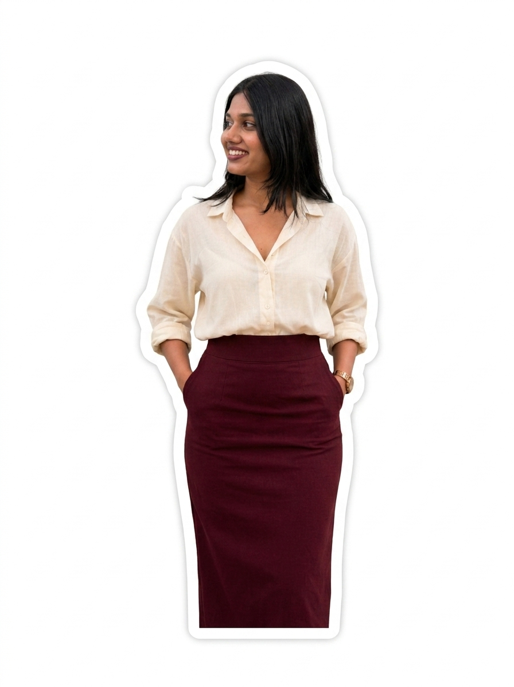

GROWTH MARKETER & ANALYST
I don't just join teams —
I make them grow faster.
Wherever I've worked, pipelines improve, costs drop, and systems get built that keep delivering long after they're launched. I bring the technical depth to architect automation, the sales instinct to understand buyers, and the analytical rigour to measure everything that matters. Give me a growth challenge — I'll own it end-to-end.

SKI walk into a team, find where growth is leaking, and fix it — with systems that keep working long after I've built them.
I went deep into direct sales at upGrad — not just to hit targets, but to understand exactly how customers think, decide, and commit. That obsession with the buyer's mind made me Q4 2024 Top Performer, and it permanently shaped how I approach every campaign and funnel I touch today.
As a Growth Marketer & Analyst, I've built automation systems that cut manual work from 8 hours to under 30 minutes, developed my own customer acquisition strategies that bring in leads at benchmarks competitors struggle to match, and designed full user journeys from scratch. I hold a PG Diploma in Data Science & AI from IIIT Bangalore — which means I don't just read dashboards, I build them and know exactly what every number is telling us.
I don't clock in and execute tasks — I own what I work on. I bring fresh thinking, bring my whole self, and push to grow the brand the same way I grow myself: with intent, with data, and without shortcuts.
Here's what changes when I join a team — four things I bring on day one that most growth marketers can't.
Technical fluency from a B.Tech in Electronics. Buyer psychology from a year in direct sales as Q4 Top Performer. Analytical rigour from a PG Diploma in Data Science & AI at IIIT Bangalore. And end-to-end marketing ownership that ties all three together. Most teams need three people for what I bring as one.
When I join a project, things get built — not planned indefinitely. I architect automation workflows from logic to deployment, design user journeys from real drop-off data, and build reporting frameworks that answer questions leadership actually asks. The result: growth infrastructure that scales beyond the team's bandwidth.
I don't wait to be directed to the problem. I look at the funnel, find where growth is leaking, build the fix, and ship it. Every channel I've owned has improved — not because I was told to optimise it, but because I treated every metric as a signal and every drop-off as a problem worth solving.
A/B test everything. Build dashboards that answer real business questions, not just surface vanity metrics. Connect every campaign action to pipeline impact. With a PG in Data Science & AI, I think in hypotheses, structure experiments properly, and optimise toward what the business actually needs to move — not what looks good in a report.
Real work. Real outcomes. Every project below is something I built, shipped, and measured — each one tied directly to business growth.
Architected a 5-stage email + WhatsApp automation system for upGrad's PG programs using Brevo + AiSensy + LeadSquared. Mapped intent signals (webinar sign-ups, brochure downloads, page dwell time, inactivity triggers) to personalised nurture sequences. The workflow that used to take the team 8 hours of manual daily work now runs in under 30 minutes — entirely automated. Leads are scored, segmented, and nurtured without a single manual touch.
Identified 90-day+ inactive leads, segmented by program interest and engagement score, and deployed a 4-touch personalised win-back sequence across email and WhatsApp — reactivating pipeline at a fraction of new-lead cost.
Led performance marketing across Google Search and Meta Ads for upGrad's PG programs. Ran 12+ creative A/B tests, overhauled audience segmentation and landing page alignment — systematically driving down CPL while lifting lead quality and intent score.
Built a centralised reporting framework tracking every top and mid-funnel campaign from impression to enrolment across channels. Automated weekly KPI reports for leadership — cutting reporting time by 60% and replacing gut-feel decisions with real attribution data. Every campaign now has a clear line of sight to pipeline impact.
Built a structured WhatsApp broadcast architecture on AiSensy for PG program launch campaigns. Created segmented contact lists by program interest, funnel stage, and past engagement. A/B tested message angles — career ROI vs skills gap vs placement outcomes. Replaced generic mass blasts with precise, staged delivery that actually lands.
Designed and deployed automated workflow rules in LeadSquared — auto-scoring leads on form fills, email opens, and webinar attendance, then routing them to the right sales rep based on program interest and score tier. Replaced a 2–3 hour daily manual assignment process with a fully automated pipeline. Lead response time dropped from 4+ hours to under 15 minutes.
Outside of upGrad, I take on select freelance projects — bringing the same rigour, creative edge, and ownership I apply to everything I do.
I create high-converting UGC content for brands that need to build trust at scale. Authentic product storytelling, lifestyle integrations, and creator-native content — crafted to feel like a recommendation, not an ad. The kind of content that gets saved, shared, and acted on.
I design and build high-performance portfolio websites — clean, fast, and built to convert attention into opportunities. Custom-coded, mobile-first, and designed to position your work exactly the way it deserves to be seen. No templates. No compromises.
Sharp, purposeful writing that builds brand authority and moves readers to act. From email sequences that nurture leads to long-form content that ranks — every word is written with a specific outcome in mind, backed by an understanding of the funnel it lives in.
I'm actively looking to join a team where I can own growth end-to-end and create measurable impact from day one. If that's your team — I'd love to talk. I respond within 24 hours.
shreyakuber02@outlook.com +91 84315 14406